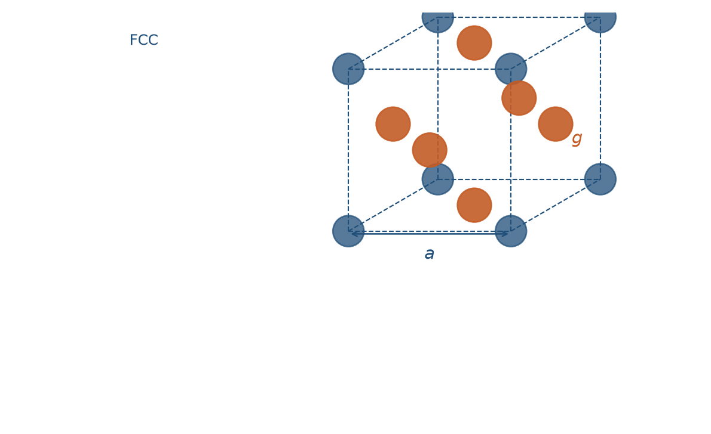
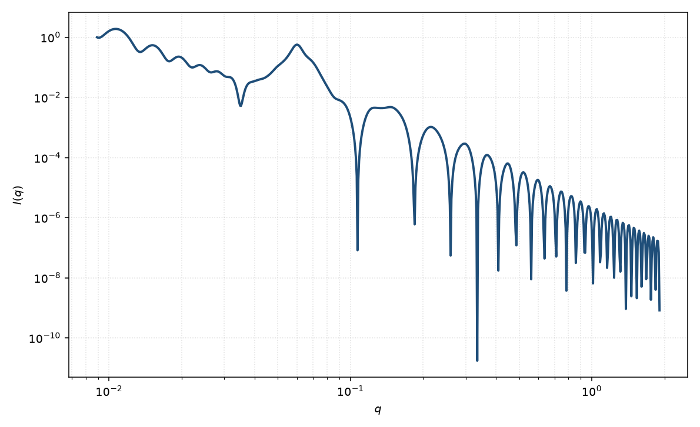

面心立方准晶
FCC paracrystal
适用场景
球形颗粒占据面心立方（FCC）点阵、近程有序而远程失序时用本页。硬球或短程排斥胶体在较高体积分数下倾向 FCC / HCP；嵌段共聚物球形微区也可出现 FCC。粉末峰位比接近 $\sqrt{3}:\sqrt{4}:\sqrt{8}:\sqrt{11}$（$(111),(200),(220),(311)$）支持本格子。
密堆六方（HCP）在一维曲线上与 FCC 容易混淆；若只有少数宽峰，不要坚持指定 FCC。液体样结构因子没有未混指数消光。
物理图像
FCC 惯例晶胞四点：原点与三个面心。几何结构因子只在 $h,k,l$ 全奇或全偶时非零。三维准晶仍是三个 $Z_1$ 乘以该晶胞因子的粉末平均；BCC / FCC 的正确系数见 Matsuoka 1990 年更正。
最近邻 $d_{\mathrm{nn}}=a/\sqrt{2}$，第一峰为 $(111)$，$q_1=(2\pi/a)\sqrt{3}$。$g$ 与热振动 Debye–Waller 都压制高阶峰，但 $g$ 还按邻级 $k$ 累积加宽，这是准晶与完美晶体加温度因子的差别。
示意图


核心公式
出发点
三维准晶的轴向无序与简单立方准晶相同：三轴独立的 Hosemann 间距涨落，相对畸变 $g=\sigma_a/a$。FCC 惯例晶胞有四点：原点与三个面心。几何结构因子只在 $h,k,l$ 全奇或全偶时非零。格点粒子仍取均匀球 $P_{\mathrm{sph}}$。
推导
一维因子（高斯累积阻尼）
$$Z_1(q_x)=1+\frac{2}{N}\sum_{k=1}^{N-1}(N-k)\cos(k q_x a)\,\mathrm{e}^{-k q_x^2(ga)^2/2}.$$令 $a_1=a(q_x+q_y)/2$、$a_2=a(q_y+q_z)/2$、$a_3=a(q_z+q_x)/2$，四点振幅
$$F_{\mathrm{fcc}}=1+\mathrm{e}^{ia_1}+\mathrm{e}^{ia_2}+\mathrm{e}^{ia_3},\qquad |F_{\mathrm{fcc}}|^2=\bigl|1+\mathrm{e}^{ia_1}+\mathrm{e}^{ia_2}+\mathrm{e}^{ia_3}\bigr|^2.$$在倒易点 $q_{hkl}=(2\pi/a)(h,k,l)$ 上，面心相位为 $\mathrm{e}^{i\pi(h+k)}$ 等。$h,k,l$ 奇偶混杂时四项相消，$F_{\mathrm{fcc}}=0$；全奇或全偶时 $|F_{\mathrm{fcc}}|^2=16$。三维格子因子是三轴 $Z_1$ 与晶胞因子的乘积，再粉末平均：
$$I(q)=n(\Delta\rho)^2 V^2 P_{\mathrm{sph}}(q)\,\bigl\langle Z_1(q_x)Z_1(q_y)Z_1(q_z)\,|F_{\mathrm{fcc}}|^2\bigr\rangle_{\hat{q}}+B.$$$P_{\mathrm{sph}}$ 为 Rayleigh 函数。准晶阻尼来自 $\mathrm{e}^{-k q^2(ga)^2/2}$：高阶峰既降强又变宽，不同于只压低强度、不按 $k$ 加宽的 Debye–Waller。Hosemann 要求 $g\lesssim 0.25$ 才保持可分辨的准晶峰。
低 $q$ 与渐近
第一允许峰为 $(111)$，$q_1=(2\pi/a)\sqrt{3}$，由 $q_1$ 反推 $a=2\pi\sqrt{3}/q_1$。随后 $(200),(220),(311)$ 对应 $\sqrt{4}:\sqrt{8}:\sqrt{11}$。邻级阻尼使高阶峰按 $g^2$ 与 $h^2+k^2+l^2$ 迅速消失；$g$ 过大时格子类型不可辨。
$g\to 0$ 时回到有限畴 FCC 的 Laue 图样。球形式因子只调制包络：Guinier $R_g=R\sqrt{3/5}$，高 $q$ Porod $\sim q^{-4}$，不移动 $q_{hkl}$。
参数表
| 参数 | 符号 | 含义 | 单位 | 典型范围 |
|---|---|---|---|---|
| 晶格常数 | $a$ | 立方惯例晶胞边长 | Å | 由一级峰位反推 |
| 畸变因子 | $g$ | Hosemann 相对涨落 $\sigma_a/a$ | 无量纲 | $0.03$–$0.25$ |
| 相干晶胞数 | $N$ | 有限畴沿一轴的重复数 | — | 4–40 |
| 球半径 | $R$ | 占据格点的均匀球半径 | Å | $2R$ 小于最近邻 |
| 衬度 | $\Delta\rho$ | 粒子与溶剂的 SLD 差 | Å$^{-2}$ | 组成或对比实验 |
| 标度 / 本底 | $\mathrm{scale}$, $B$ | 前置因子与常数本底 | 与强度单位一致 | 实验相关 |
拟合注意
取向：粉末平均把三维倒易点涂成 Debye–Scherrer 环，一维曲线上只剩 $q_{hkl}$。纤维或剪切取向的胶体晶体应保留极角，不要用各向同性粉末公式去拟合弧向收窄的二维峰。
$g$ 与有限畴 $N$、仪器分辨率都加宽峰：优先用峰位定 $a$，用高阶峰是否存在、相对强度约束 $g$，再用一级峰宽估 $N$。未卷积分辨率时会把 smearing 读成更大的 $g$。尺寸多分散主要抹平球形式因子振荡，与格子 $g$ 正交，二者不要互换。
磁性：核磁 SLD 只改格点上的磁形式因子，格子 $a,g,N$ 与核通道共用。可辨识性：只有一个宽峰时，无法同时独立确定格子类型、$g$ 与 $N$，应先由峰位比（$q_{hkl}/q_1$）判断 SC / BCC / FCC，再放开畸变。
相近模型
- 简单立方准晶 — 简单立方，$(100)$ 为首峰。
- 体心立方准晶 — 体心格点，$(110)$ 为首峰。
- 准晶层状堆叠 — 一维准晶，不是 FCC 密堆。
- 硬球结构因子 — 液体样 $S(q)$，无布拉格消光。
参考文献
- Hosemann, R.; Bagchi, S. N. Direct Analysis of Diffraction by Matter. North-Holland: Amsterdam, 1962.
- Matsuoka, H.; Tanaka, H.; Hashimoto, T.; Ise, N. Elastic scattering from cubic lattice systems with paracrystalline distortion. Phys. Rev. B 1987, 36, 1754–1765. DOI: 10.1103/PhysRevB.36.1754
- Matsuoka, H.; Tanaka, H.; Iizuka, N.; Hashimoto, T.; Ise, N. Elastic scattering from cubic lattice systems with paracrystalline distortion. II. Phys. Rev. B 1990, 41, 3854–3856. DOI: 10.1103/PhysRevB.41.3854
- Guinier, A.; Fournet, G. Small-Angle Scattering of X-rays. Wiley: New York, 1955.